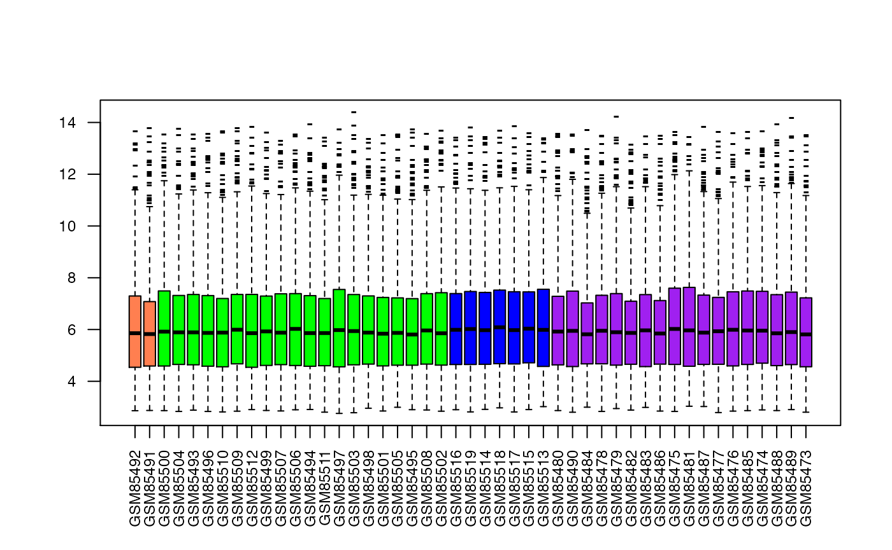
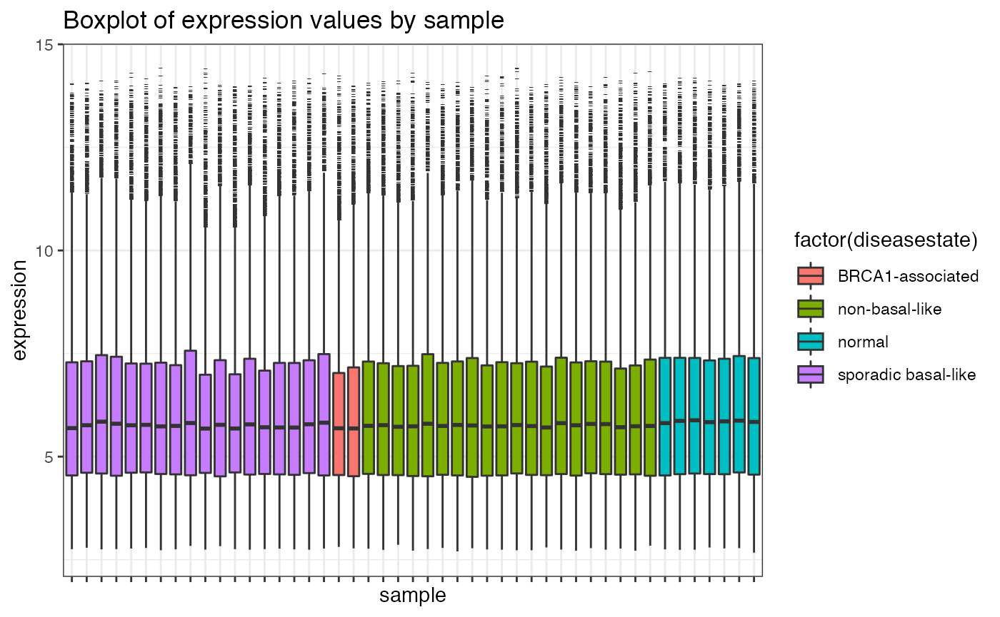
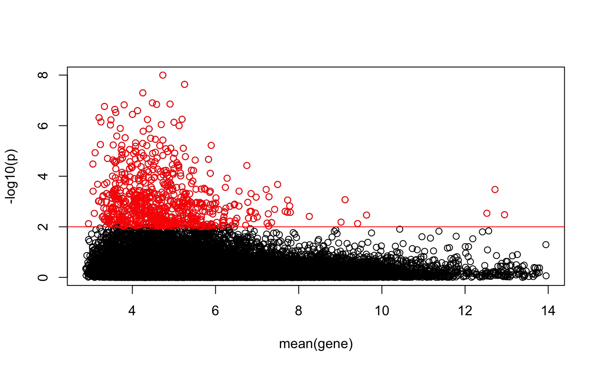
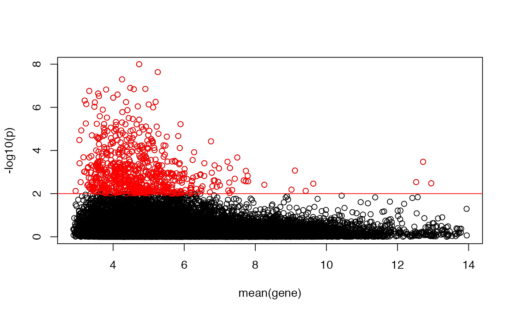
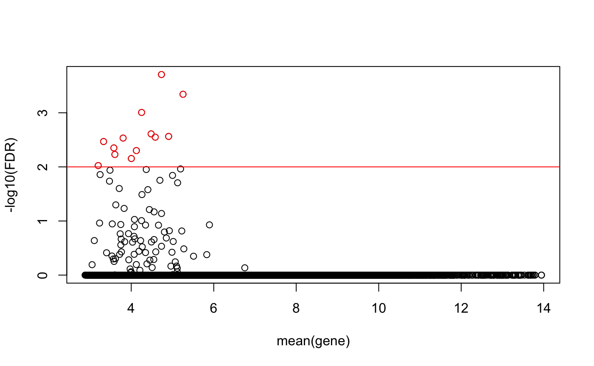
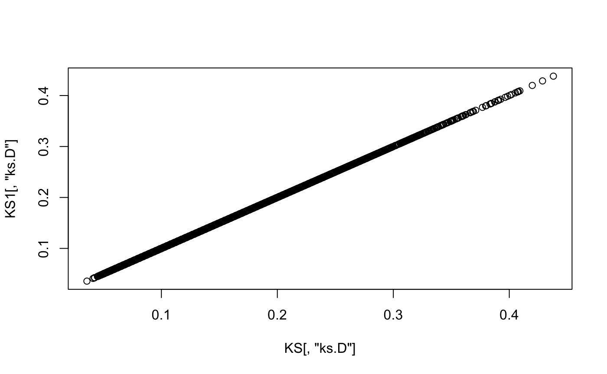
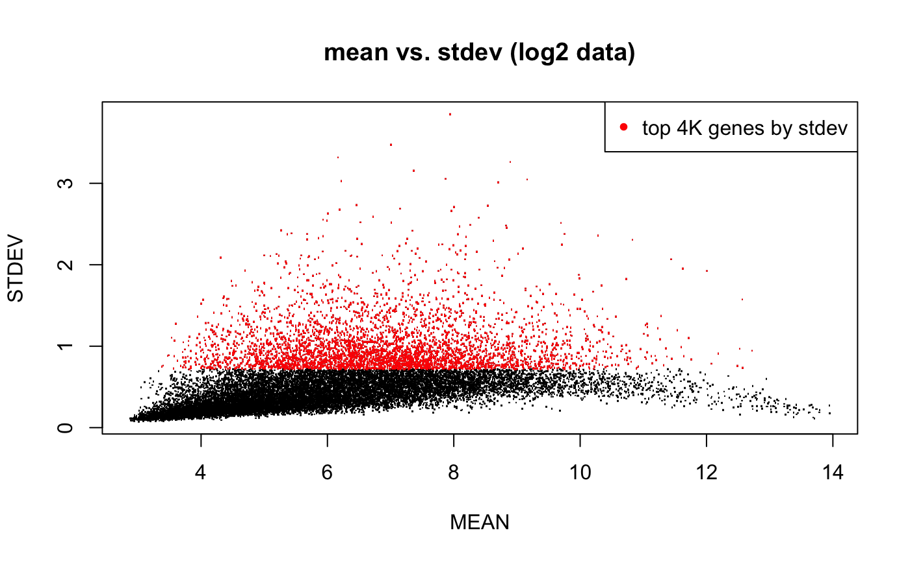
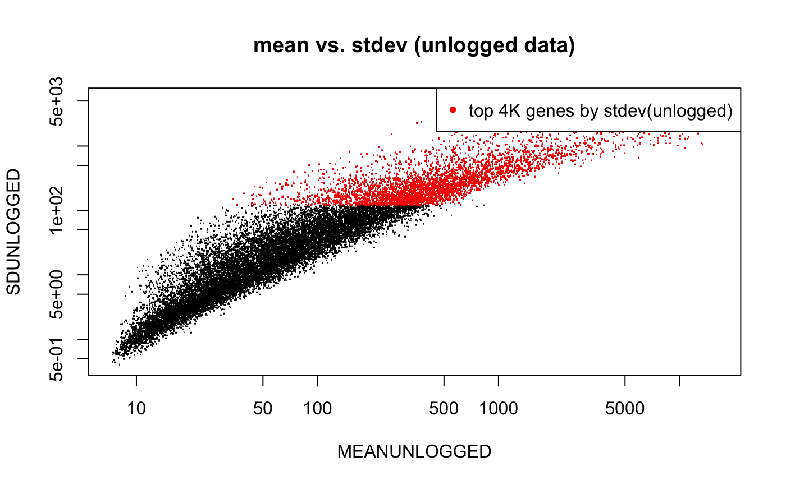
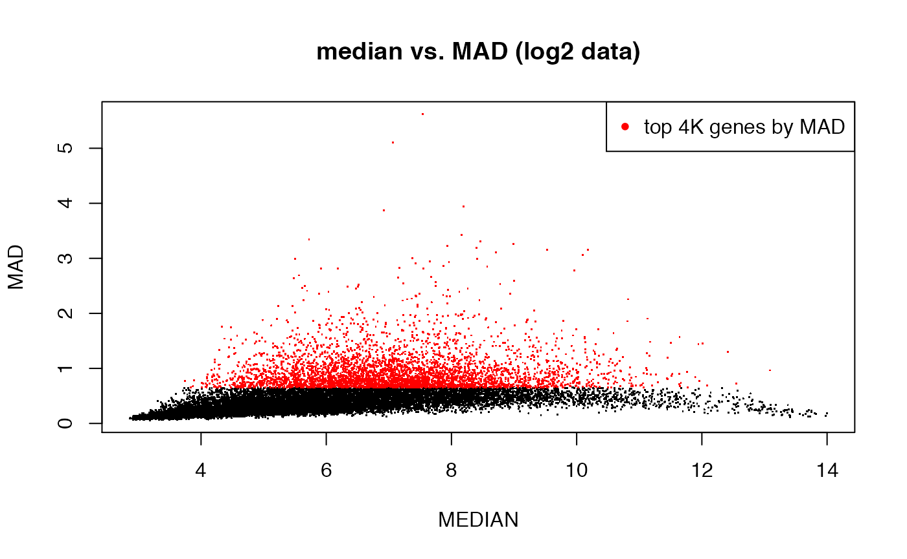

Here we show some basic QC plots to assess the quality of the data and the nature of the distribution. For this purpose, we use a small Breast Cancer dataset we have pre-uploaded to the data/ folder.
Import Breast Cancer Data
## breast cancer subtypes dataset from ArrayExpress
data(AEDAT.collapsed)
eset <- AEDAT.collapsed
emat <- exprs(eset)
## Assign rownames to emat that are gene annotations (These were removed by mistake)
rownames(emat) <- rownames(fData(eset))
## Table of disease states
print(table(eset$Characteristics.DiseaseState))##
## BRCA1-associated breast cancer non-basal-like breast cancer
## 2 20
## normal sporadic basal-like breast cancer
## 7 18
## simplify labels
eset$Characteristics.DiseaseState <- gsub(" breast cancer","",eset$Characteristics.DiseaseState)
print(table(eset$Characteristics.DiseaseState))##
## BRCA1-associated non-basal-like normal sporadic basal-like
## 2 20 7 18Boxplots of gene expression values by sample
Here, we plot the distribution of genes within each sample as boxplots. This is a quick check of how symmetric the distributions are, and whether any ‘biases’ are apparent.
## Boxplot of expression values per sample (sorted and colored by disease state)
sampleCol <- c("coral","green","blue","purple")[as.factor(eset$Characteristics.DiseaseState)]
ord <- order( eset$Characteristics.DiseaseState )
boxplot(as.data.frame(exprs(eset)[,ord]),col=sampleCol[ord],pch="-")
## If you have a slow machine, you might want to subsample (random 1000 genes from the total)
## here, we are also taking the opportunity to better size (cex) and orient (las) the axis labels
set.seed(321) # for reproducible results
boxplot(as.data.frame(exprs(eset)[sample(nrow(emat),1000),ord]),col=sampleCol[ord],pch="-",
las=2,cex.axis=.75)
## Fancier graphics with ggplot
library(reshape2)
library(ggplot2)
df <- data.frame(t(exprs(eset)))
df$sample <- sampleNames(eset)
df$diseasestate <- eset$Characteristics.DiseaseState
df.melt <- melt(df, id=c("sample","diseasestate"))
p1 <- ggplot(df.melt, aes(factor(sample), value))+
geom_boxplot(aes(fill = factor(diseasestate)), outlier.shape = 95, outlier.size = 1)+
xlab("sample")+ylab("expression")+
theme_bw()+
theme(axis.text.x = element_blank()) + ggtitle("Boxplot of expression values by sample")
p1
Testing the (log-)normality of the gene distributions
A lot of the statistical analyses performed on microarray data are based on the assumption that the data is (log-)normally distributed. Below, we show the use of a Kolmogorov-Smirnov (KS) test to compare each gene’s (log-)distribution to a standard normal.
## simple wrapper to have ks.test return the pair <statistic,p-value>
ks.pair <- function(X,Y) { tmp <- ks.test(X,Y); c(ks=tmp$statistic,p=tmp$p.value) }
## now let's apply it to each gene in the dataset
emat <- exprs(eset)
emat01 <- (emat - rowMeans(emat)) / apply(emat,1,sd)
KS <- t(apply(emat01,1,ks.pair,pnorm))
## let's plot the deviation from normality (given by -log10(p)) as a function of the gene's expression
plot(rowMeans(emat),-log10(KS[,"p"]),ylab="-log10(p)",xlab="mean(gene)")
abline(h=-log10(0.01),col="red")
idx <- -log10(KS[,"p"])>-log10(0.01)
points(rowMeans(emat)[idx],-log10(KS[idx,"p"]),col="red")
## let's compute a more conservative mht-corrected FDR, and plot that
KS <- cbind(KS,fdr=p.adjust(KS[,"p"]))
plot(rowMeans(emat),-log10(KS[,"fdr"]),ylab="-log10(FDR)",xlab="mean(gene)")
abline(h=-log10(0.01),col="red")
idx <- -log10(KS[,"fdr"])>-log10(0.01)
points(rowMeans(emat)[idx],-log10(KS[idx,"fdr"]),col="red")
Here, we show an alternative ‘implementation’ where, instead of standardizing the data (emat), we pass to pnorm the gene mean and sd.
## Rather than transforming the data to emat01, we can use the original data and add
## mean = mean(X), sd = sd(X) to the ks.test() function.
## This will feed the mean and sd of the gene-wise expression to the pnorm function
ks.pnorm <- function(X,Y) { tmp <- ks.test(X,pnorm, mean=mean(X), sd=sd(X)); c(ks=tmp$statistic,p=tmp$p.value) }
## now we can run as before, but with the emat object, not emat01
KS1 <- t(apply(emat,1,ks.pnorm))
## let's plot the deviation from normality (given by -log10(p)) as a function of the gene's expression
plot(rowMeans(emat),-log10(KS1[,"p"]),ylab="-log10(p)",xlab="mean(gene)")
abline(h=-log10(0.01),col="red")
idx <- -log10(KS1[,"p"])>-log10(0.01)
points(rowMeans(emat)[idx],-log10(KS1[idx,"p"]),col="red")
## let's compute a more conservative mht-corrected FDR, and plot that
KS1 <- cbind(KS1,fdr=p.adjust(KS[,"p"]))
plot(rowMeans(emat),-log10(KS1[,"fdr"]),ylab="-log10(FDR)",xlab="mean(gene)")
abline(h=-log10(0.01),col="red")
idx <- -log10(KS1[,"fdr"])>-log10(0.01)
points(rowMeans(emat)[idx],-log10(KS1[idx,"fdr"]),col="red")
# Compare the test statistics
plot(KS[,"ks.D"], KS1[,"ks.D"])
Variation Filtering
We now show how to filter genes based on different measures of variation: standrad deviation (SD) and its robust counterpart, the median absolute deviation (MAD).
## variation filter: rank genes according to that variation across samples
## method 1: filter by standard deviation
MEAN <- apply(emat, 1, mean)
STDEV <- apply(emat, 1, sd)
MAD <- apply(emat, 1, mad)
MEDIAN <- apply(emat, 1, median)
## highlight the top 4000 genes by stdev
plot(MEAN, STDEV, pch = ".", main = "mean vs. stdev (log2 data)")
top4Ksd <- order(STDEV, decreasing = T)[1:4000]
points(MEAN[top4Ksd], STDEV[top4Ksd], pch = ".", col = "red")
legend("topright", pch = 20, col = "red", legend = "top 4K genes by stdev")
eset.top4ksd <- eset[top4Ksd,]
#saveRDS(eset.top4ksd, file=file.path(OMPATH,"data/AEDAT.collapsed.sd4k.RDS"))
## unlogged data (multiplicative error), but plotted on logged axis
MEANUNLOGGED <- rowMeans(2^emat)
SDUNLOGGED <- apply(2^emat,1,sd)
plot(MEANUNLOGGED,SDUNLOGGED,pch=".",log="xy",main="mean vs. stdev (unlogged data)")
top4K <- order(SDUNLOGGED,decreasing=T)[1:4000]
points(MEANUNLOGGED[top4K],SDUNLOGGED[top4K],pch=".",col="red")
legend("topright",pch=20,col="red",legend="top 4K genes by stdev(unlogged)")
## method 2: filter by MAD (median absolute deviation)
MAD <- apply(emat, 1, mad)
MEDIAN <- apply(emat, 1, median)
## highlight top 4000 genes by MAD
plot(MEDIAN, MAD, pch = ".", main = "median vs. MAD (log2 data)")
top4Kmad <- order(MAD, decreasing = T)[1:4000]
points(MEDIAN[top4Kmad], MAD[top4Kmad], pch = ".", col = "red")
legend("topright", pch = 20, col = "red", legend = "top 4K genes by MAD")
eset.top4kmad <- eset[top4Kmad,]
#saveRDS(eset.top4kmad, file=file.path(OMPATH,"data/AEDAT.collapsed.mad4k.RDS"))
## let us look at the overlap between the two filters
length(intersect(top4Ksd,top4Kmad))## [1] 3058